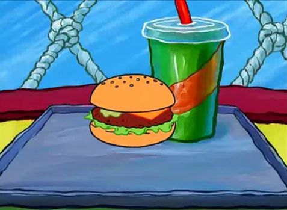

Krabby Patty
Description
The Krabby Patty secret formula is SpongeBob's greatest secret, one that not even the creator, Stephen Hillenburg revealed before his passing. The Patty has done fantastical and extraordinary things throughout the course of the show; from curing bouts of depression, inspiring artists to create masterpieces, and even satitate the pallete of a god.
But what sandwich secret could cause all of these events? Lets find out!
Ingredients
- 1 SpongeBob-sized imagination
- 1 pinch of ocean breeze
- 1 secret sauce (Shh... it's a secret!)
- 1 freshly baked Krabby Patty bun
- 1 crispy lettuce leaf
- 1 juicy tomato slice
- 1 crunchy pickle
- 1 slice of melted cheese
- 1 perfectly grilled Krabby Patty (contains Krabby love)
Steps: Assembling the Krabby patty
- Start with a SpongeBob-sized imagination. It's the secret ingredient that makes every Krabby Patty special!
- Add a pinch of ocean breeze to infuse that Bikini Bottom flavor.
- Spread a generous amount of the secret sauce (remember, it's a secret!) on the freshly baked Krabby Patty bun.
- Layer on a crispy lettuce leaf, a juicy tomato slice, and a crunchy pickle.
- Top it off with a slice of melted cheese that's as gooey as SpongeBob's laughter.
- Finally, place the perfectly grilled Krabby Patty on the bun.
Congratulations! You just made a krabby patty!
Servings 1-2 people
eat this krabby patty with cola! YIPPEE
